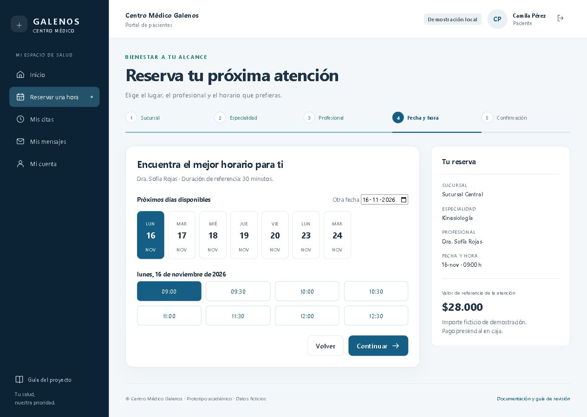
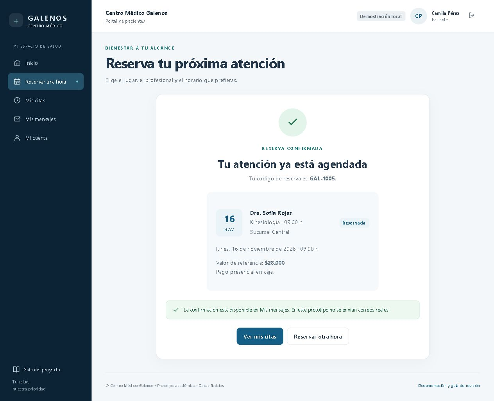
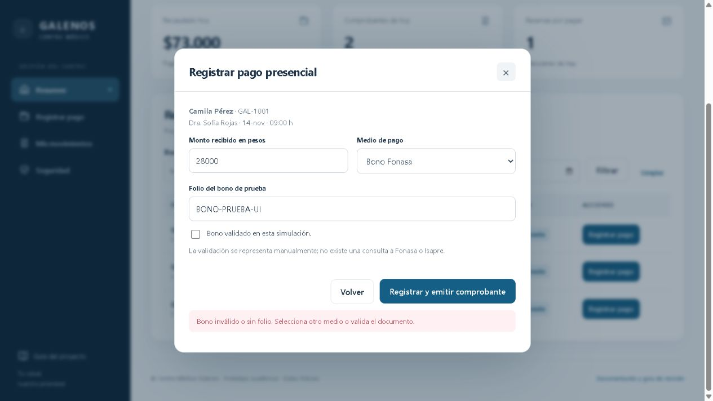
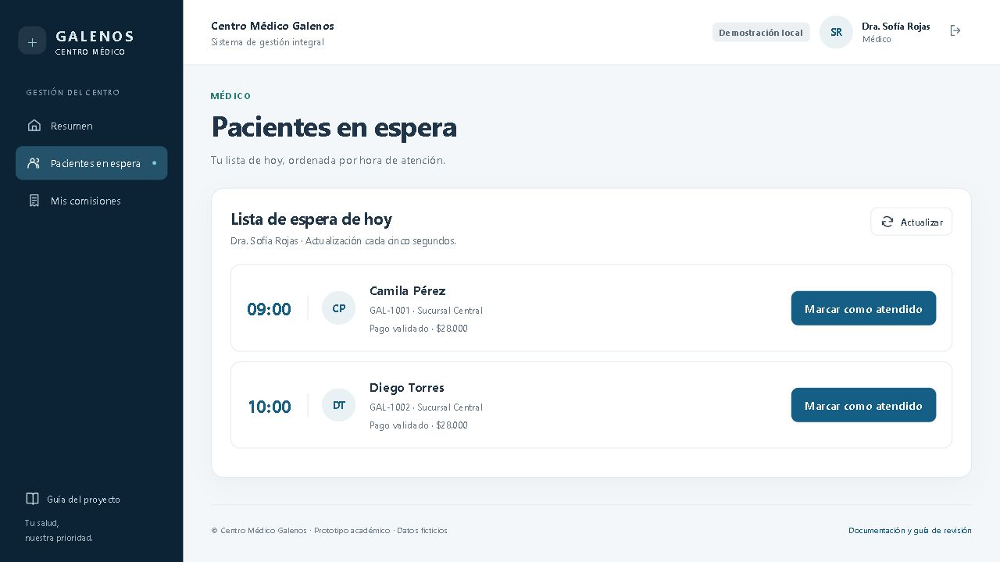
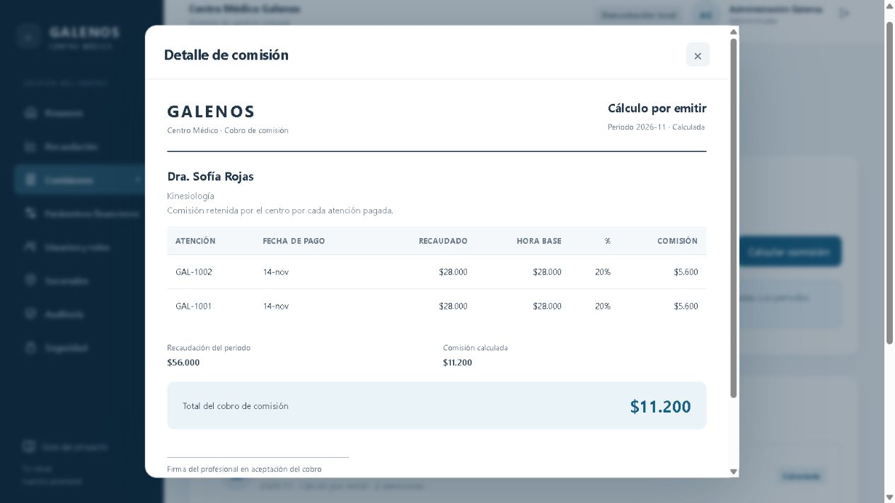

Producto y alcance de Galenos
El prototipo SGMG reúne la gestión de horas médicas, caja presencial, espera y comisiones del Centro Médico Galenos. Su referencia principal es el Informe N.º 2 del grupo 2, revisión 2.0 del 21 de octubre de 2026. La construcción permite revisar las reglas y los recorridos del producto antes de invertir en una implementación de producción.
Visión y valor
Centralizar agendas, reservas y control financiero para reducir trabajo administrativo, evitar errores de cálculo y facilitar nuevas sucursales. El informe define cinco métricas: reserva en cinco pasos, exactitud de comisiones al peso, búsquedas con el 95 por ciento bajo 1,5 segundos, sucursales por configuración y recaudación conciliada con caja. En esta versión se comprueban reglas sobre datos de demostración; las métricas de carga y operación requieren un sistema desplegado y mediciones posteriores.
Perfiles y permisos del recorrido
| Perfil | Operaciones |
|---|---|
| Paciente | Registro, activación simulada, acceso, reserva en cinco etapas, consulta, anulación, reagendamiento y mensajes propios. |
| Secretaría | Disponibilidad, generación trimestral, calendario base, cambios de agenda con confirmación, anulaciones, recaudación, emisión de comisiones y registro de su pago. |
| Cajero | Registro presencial de pagos, validación de bono representada, recibos y movimientos propios. |
| Médico | Espera del día con pago validado, marcado de atención y comprobantes propios emitidos. |
| Administrador | Recaudación, cálculo, hora base por especialidad, porcentajes, ajustes, usuarios, roles, sucursales, auditoría y exportación de datos de prueba. |
La navegación respeta los perfiles y las funciones de dominio vuelven a comprobar los permisos. Al tratarse de código ejecutado en el navegador, esto permite validar el diseño de permisos y no constituye una barrera de seguridad frente a alguien con acceso al equipo o a las herramientas del navegador.
Reglas funcionales
- Reserva: sucursal, especialidad, profesional, fecha y hora, confirmación. Se valida de nuevo el horario al confirmar y se retira de la disponibilidad local.
- Anulación por paciente: solo reservas propias no atendidas, sin pago y con al menos veinticuatro horas de anticipación. Secretaría puede gestionar las pagadas; se conserva el pago para revisión y no se ejecuta una devolución.
- Reagendamiento: misma especialidad, anticipación de veinticuatro horas y cambio de ocupación en una operación local. Si el nuevo horario está ocupado se conserva la reserva original.
- Disponibilidad: bloques por médico y día; se rechaza solapamiento aunque se intente usar otra sucursal para el mismo profesional.
- Agenda: tres meses por una acción; excluye días no laborables configurados. Repetir la generación no duplica horarios.
- Cambios de agenda: se listan las reservas afectadas y se pide confirmación. Se conservan para gestión y se impide cobrar una reserva cuya disponibilidad sigue sin resolverse.
- Pago: medio, importe en pesos y folio único. Un bono inválido no cambia el estado ni registra recaudación. Un pago validado deja la cita en espera para el día de atención.
- Médico: consulta únicamente pacientes propios del día, con pago validado, ordenados por hora; la vista se actualiza cada cinco segundos mientras está abierta.
- Comisiones: por cada atención pagada se aplica hora base de la especialidad por porcentaje del médico; el periodo suma los resultados. La base y el porcentaje se conservan con el pago. Emitir el comprobante cierra el cálculo del periodo.
- Ajustes: motivo, importe, responsable y fecha separados del cálculo original. El registro de pago de comisión guarda una referencia y cambia el estado a pagada.
Límites
No se incluyen pasarelas de pago, historias clínicas, diagnósticos ni transferencias de fondos. Los médicos, pacientes, sucursales, aranceles y días no laborables iniciales son ficticios. La imagen de la fachada procede de la presentación original.
Cobertura y autoridad de fuentes
El informe actual usa RF 17 para reagendar, RF 18 para ajustar y RF 19 para hora base por especialidad. Esta numeración prevalece sobre la ERS anterior. El desbloqueo manual se conserva como soporte de acceso y auditoría; ya no se presenta como un RF 17 independiente.
La guía académica de prototipado exige un proyecto navegable en Moqups y entrega de su enlace en AVA. Esta versión local aporta una implementación navegable y material para trasladar los recorridos; todavía no existe un enlace de Moqups verificado.
Organización del trabajo con Scrum
El informe del equipo define a José López como Scrum Master, Benjamín Lorca como Product Owner y Fritz Pierre como desarrollador. Estos roles se conservan. La construcción de este paquete no representa reuniones celebradas ni una aprobación del Product Owner.
Product Goal
Automatizar los procesos de reservas, atención administrativa y comisiones para mejorar la rentabilidad, reducir errores y soportar el crecimiento del centro. Se conservan los objetivos OP-1 de acceso y expansión, OP-2 de agendas y citas, OP-3 de pagos y espera, y OP-4 de recaudación y comisiones del informe.
Backlog de referencia
| Incremento de origen | Historias estimadas | Puntos del informe | Foco |
|---|---|---|---|
| Sprint 1 | 4 | 18 | Acceso, bloqueo, personal y registro. |
| Sprint 2 | 10 | 44 | Agendas, reserva, caja, bonos, anulación y notificaciones. |
| Sprint 3 | 9 | 37 | Espera, recaudación, comisiones, sucursales, reagendamiento y ajustes. |
| Refinamiento pendiente | HU-4-7 | Sin estimación | Fórmula por hora base y especialidad, vinculada a RF 19. |
El informe suma 99 puntos en 23 historias estimadas. HU-4-7 está en la trazabilidad y en el backlog anterior al refinamiento, pero falta en el backlog refinado y en la tabla de esfuerzo. El paquete conserva los 99 puntos originales y agrega esa historia como pendiente de estimar. No asigna un punto ficticio ni afirma una velocidad del equipo.
El CSV y el JSON adjuntos permiten revisar e importar el backlog. Sus estados describen cobertura del prototipo; no significan que se haya satisfecho el DoD de producción.
Objetivos propuestos para revisar los incrementos
- Acceso: permitir registro y activación de prueba, ingreso por rol y administración de cuentas, verificando bloqueos y desactivación.
- Operación: permitir a secretaría preparar agendas y al paciente reservar en cinco etapas; registrar el pago presencial con recibo y tratamiento de errores.
- Finanzas y cierre: habilitar espera del médico, recaudación conciliada, comisiones por especialidad, emisión, ajustes y pago informativo.
Estos objetivos son una propuesta de trabajo basada en los sprints del informe. El Sprint Goal del sprint académico actual debe ratificarse en Jira con el equipo. La guía de la última actividad plantea tres semanas; el informe mantiene tres sprints de dos semanas. No se modifica esa diferencia silenciosamente.
Planificación y seguimiento
- Antes del sprint: PO ordena por valor y dependencias; el equipo confirma criterios, puntos y capacidad. HU-4-7 requiere refinamiento y estimación conjunta.
- Sprint Planning: acordar un objetivo único, seleccionar historias y registrar tareas y criterios de éxito.
- Daily Scrum: inspeccionar el avance hacia el objetivo, adaptar el plan y registrar impedimentos; duración máxima de quince minutos.
- Refinamiento: aclarar reglas y dividir trabajo cuando sea útil. No es una ceremonia obligatoria de Scrum, aunque la actividad académica pide incluir sesiones en el calendario.
- Sprint Review: inspeccionar el incremento con los interesados y actualizar el backlog según lo aprendido.
- Sprint Retrospective: revisar la forma de trabajo y acordar mejoras verificables.
Calendario propuesto para el sprint académico
| Momento relativo | Actividad | Resultado esperado |
|---|---|---|
| Día hábil 1 | Planning | Objetivo, selección y plan del sprint. |
| Cada día hábil | Daily de hasta 15 minutos | Avance, impedimentos y adaptación. |
| Días hábiles 5 y 10 | Refinamiento | Reglas aclaradas y backlog actualizado. |
| Día hábil 15 | Review | Evidencia del recorrido y comentarios. |
| Después de la Review | Retrospectiva | Acciones para mejorar el trabajo. |
El equipo debe agregar fechas, horarios y participantes reales antes de presentar este calendario como ejecutado.
Definition of Done
El informe exige criterios satisfechos, revisión de código por otro integrante, documentación, validación del PO y RNF aplicables. En este paquete hay pruebas de dominio y documentación, pero la revisión independiente y la aprobación del PO siguen pendientes. HTTPS, persistencia de servidor, auditoría protegida, concurrencia real, correo, disponibilidad y segundo factor real requieren implementación posterior.
Una historia puede marcarse como representada en la maqueta y permanecer pendiente del DoD del producto. Para cerrar una historia en el proyecto real, el equipo debe revisar toda su condición de terminado y registrar quién la verificó.
Backlog completo para revisión
23 historias estimadas con 99 puntos, más HU-4-7 pendiente de estimar. La cobertura local no equivale a aprobación ni a cumplimiento de todo el DoD.
| Historia y necesidad | RF | Prioridad | Sprint | Puntos | Revisión local del equipo |
|---|
Los estados de revisión seleccionados aquí se guardan en este navegador como notas del revisor. No actualizan Jira ni acreditan la revisión de otra persona.
Arquitectura y modelo de datos
Implementación entregada
La aplicación local usa HTML, CSS y JavaScript sin dependencias externas. Los recursos se incluyen en la carpeta y se puede abrir el archivo de inicio directamente en un navegador moderno. La información de demostración se guarda en localStorage y la sesión en sessionStorage.
| Capa | Archivo | Responsabilidad |
|---|---|---|
| Interfaz | Aplicacion/index.html y styles.css | Estructura, diseño responsivo, foco, formularios y presentación. |
| Interacción | Aplicacion/app.js | Navegación por rol, formularios, diálogos, mensajes, impresión y exportación. |
| Dominio | Aplicacion/domain.js | Reglas, estados, permisos de las operaciones y cálculo monetario. |
| Estado local | Navegador | Datos ficticios y persistencia de esta demostración. |
| Verificación | Pruebas/domain.test.cjs | Escenarios automatizados de negocio. |
Separar dominio e interfaz permite probar reglas sin depender de la presentación. No hay un servidor de datos, una API desplegada ni una integración real con proveedores.
Entidades
| Entidad | Atributos relevantes | Relaciones |
|---|---|---|
| Usuario | Identidad, rol, correo, estado, activación, intentos y bloqueo. | Un paciente tiene citas; un usuario médico se asocia a un profesional. |
| Profesional | Especialidad, sucursales y porcentajes con vigencia. | Disponibilidades, horarios, pagos y comisiones. |
| Especialidad | Nombre e historial de hora base monetaria. | Profesionales y cálculo por atención. |
| Sucursal | Nombre y referencia de ubicación de prueba. | Profesionales, disponibilidades, horarios y pagos. |
| Disponibilidad | Día, inicio, término, médico y sucursal. | Origina horarios concretos. |
| Calendario base | Fecha y motivo de día no laborable. | Excluye o bloquea horarios. |
| Horario | Médico, sucursal, fecha, hora y estado de bloqueo. | Puede tener una reserva activa. |
| Cita | Paciente, horario, código, estado y marcas de revisión. | Pago, notificaciones y atención. |
| Pago | Folio, medio, importe, fecha, base y porcentaje capturados. | Una cita y un profesional. |
| Comisión | Profesional, periodo, detalle, cálculo, ajustes, cierre y estado. | Pagos del periodo y referencia de pago. |
| Notificación | Tipo, fecha de ejecución, intentos y estado. | Paciente y cita. |
| Auditoría | Fecha, responsable, acción y referencia. | Operaciones relevantes. |
Estados e invariantes
- Cita: Reservada pasa a En espera por pago, a Atendida por el médico, o a Anulada según los permisos y reglas. Una marca de revisión de agenda impide cobrar hasta resolverla.
- Comisión: Calculada pasa a Pendiente al emitir el comprobante y cerrar el cálculo; pasa a Pagada al registrar su referencia. Los ajustes se conservan separados del importe original.
- Notificación: Programado pasa a Simulado en una entrega de prueba; tras un intento inicial y tres reintentos fallidos pasa a Fallido y genera alerta visible.
- Una cita tiene como máximo un pago en esta versión. Un horario tiene como máximo una reserva activa dentro del estado local.
- Los importes se expresan en pesos enteros. El porcentaje admite dos decimales y se calcula mediante puntos básicos y redondeo al peso por atención.
Fórmula financiera adoptada
El RF 19 del informe especifica la hora base de la especialidad como base de cálculo. Por ello la comisión de una atención es hora base por porcentaje del médico, y la comisión mensual suma las atenciones pagadas del periodo. Esto reemplaza la base de recaudación descrita en versiones anteriores del RF 14 y en parte del CU-14.
Ejemplo ficticio: dos atenciones con hora base de 28.000 pesos y porcentaje de 20 generan 5.600 pesos cada una, total 11.200. La recaudación se informa por separado y puede diferir de la base si el importe recibido es distinto. La interpretación mensual por suma de atenciones debe ratificarse con el PO porque RF 19 no desarrolla todo el cálculo del periodo.
La base y el porcentaje se capturan al registrar cada pago, aplicando la vigencia de esa fecha. Cambios posteriores no reescriben los comprobantes. Esta elección necesita validación para casos de corrección retroactiva, pagos posteriores al cierre y devoluciones.
Arquitectura objetivo de producción
Navegador responsivo, API de aplicación, base de datos relacional, cola de notificaciones, proveedor de correo y almacenamiento separado para respaldos. El control de acceso y las reglas se ejecutarán en el servidor, con transacciones y restricciones de unicidad para evitar dobles reservas entre usuarios concurrentes.
El archivo contrato-api.json presenta un contrato inicial para revisión, no una API implementada. El esquema de datos del prototipo es una referencia para migración; las claves, contraseñas, sesiones, auditoría y respaldos requieren un diseño operativo antes de tratar datos reales.
Criterios para la migración
- Reemplazar localStorage por persistencia del servidor y migraciones versionadas.
- Implementar autenticación y autorización de servidor, HTTPS y un segundo factor con códigos de un solo uso reales.
- Mantener restricciones de unicidad en correo, RUT, folios y reserva activa por horario.
- Confirmar y reagendar con transacciones para liberar y ocupar horarios de forma atómica.
- Procesar notificaciones y respaldos mediante tareas del servidor, incluso con todos los navegadores cerrados.
- Proteger registros de auditoría y definir retención, restauración y controles de acceso.
- Ejecutar pruebas de carga, seguridad, accesibilidad, restauración y aceptación del equipo antes del despliegue real.
Pruebas y trazabilidad
Verificación automatizada
La suite usa el ejecutor de pruebas integrado de Node.js y no requiere paquetes externos. Cubre dobles reservas, permisos, regla de veinticuatro horas, reagendamiento sin pérdida de la cita original, bloques solapados, calendario, pagos, bonos, espera, recaudación, comisiones, cierres, ajustes, usuarios, bloqueo, activación y reintentos de notificaciones.
El archivo RESULTADOS.md en la carpeta Pruebas registra el resultado de ejecución final. El código de las pruebas queda incluido para repetirlas. Pasar esas pruebas demuestra comportamiento del dominio sobre sus escenarios, no certifica infraestructura, concurrencia entre servidores ni cumplimiento completo del DoD.
Comprobación en navegador
Se recorrieron el acceso del paciente, las cinco etapas de reserva hasta obtener código, el rechazo de un bono inválido, el pago válido con recibo, la aparición del paciente en la espera del médico, el marcado de atención, el cálculo financiero y la emisión y registro de pago de una comisión. Se revisó además el portal en tamaño móvil.
Las capturas de Evidencias se obtuvieron de la aplicación real del paquete, usando datos ficticios. Se conservan para el manual y la presentación; no son diseños que sustituyan la navegación.
Pruebas de aceptación recomendadas al equipo
| Escenario | Resultado esperado |
|---|---|
| Registrar un RUT o correo duplicado | La cuenta no se crea. |
| Entrar antes de activar la cuenta | Se requiere activación. |
| Fallar cinco contraseñas | Se bloquea quince minutos y queda registro. |
| Intentar reservar un horario ocupado | Se rechaza y no se crea una segunda cita. |
| Anular a menos de veinticuatro horas | El paciente recibe rechazo y conserva su cita. |
| Reagendar a un horario que ya fue tomado | Se conserva la reserva original. |
| Agregar disponibilidad solapada | El bloque se rechaza. |
| Bloquear agenda con reservas | Se presenta la lista y se requiere confirmación. |
| Intentar cobrar con bono no validado | No aparece recaudación ni paciente en espera. |
| Registrar un pago válido | Se emite folio y el paciente pasa a espera. |
| Abrir el perfil de otro médico | Solo ve pacientes propios del día. |
| Filtrar la recaudación | El total coincide con la suma de las filas. |
| Emitir comisión y cambiar parámetros | El comprobante emitido conserva su cálculo. |
| Agregar ajuste sin motivo | Se rechaza. |
| Registrar pago de comisión | Pasa de Pendiente a Pagada y conserva referencia. |
| Mantener sesión del personal inactiva | Se cierra al superar quince minutos. |
Estado de requisitos no funcionales
| RNF | Evidencia de este paquete | Pendiente para el producto real |
|---|---|---|
| 01 Rendimiento | Reglas y filtros funcionales con datos de prueba. | Carga de 150 usuarios y medición de percentiles en el servidor de referencia. |
| 02 Seguridad | Navegación y comprobación de rol en dominio, auditoría local, hash de claves de prueba registradas. | HTTPS, seguridad de servidor, sesiones protegidas, gestión de secretos y auditoría resistente a alteración. |
| 03 Disponibilidad | No se certifica una disponibilidad operativa. | Infraestructura y medición del SLA de 99,5 por ciento. |
| 04 Usabilidad | Reserva en cinco etapas, controles etiquetados y diseño responsivo revisado. | Evaluación completa de accesibilidad WCAG 2.1 AA y pruebas con usuarios. |
| 05 Privacidad | Consentimiento representado y acceso por perfil; solo datos ficticios. | Evaluación y controles de tratamiento de datos reales conforme a los requisitos aplicables. |
| 06 Escalabilidad | Alta de sucursal y asignación por configuración. | Validación con persistencia y carga en la arquitectura real. |
| 07 Respaldo | Exportación manual de JSON desde administración. | Respaldo diario automático en un medio separado y prueba de restauración. |
| 08 Inactividad | Control de quince minutos en la interfaz del personal. | Control de sesión y expiración también en el servidor. |
| 09 Segundo factor | Recorrido con código fijo de prueba. | Integración real con aplicación autenticadora y códigos de un solo uso. |
Aceptación y evidencia
La revisión de código por otra persona y la validación del PO deben registrarse por el equipo. El paquete no atribuye aprobaciones, reuniones, usuarios entrevistados ni una retrospectiva realizada. La matriz de trazabilidad asociada enlaza RF, historias, módulos, criterios y estado de revisión.
Manual y demostración del prototipo
Cómo abrirlo
Abre Prototipo Centro Médico Galenos.html en la carpeta principal y elige Abrir aplicación. También puedes abrir Aplicacion/index.html directamente en Chrome o Edge. No requiere instalación ni conexión a internet para las pantallas y los datos de prueba. La generación de nuevas claves usa Web Crypto; si el navegador restringe funciones al abrir archivos locales, utiliza el servidor incluido con Node.js.
El archivo de inicio también abre esta documentación y la presentación. Conserva toda la estructura de carpetas al copiar el proyecto.
Acceso de demostración
| Perfil | Correo |
|---|---|
| Paciente | paciente@galenos.example |
| Secretaría | secretaria@galenos.example |
| Cajero | caja@galenos.example |
| Médico | medico@galenos.example |
| Administrador | admin@galenos.example |
La contraseña común es Galenos2026! Las cuentas se seleccionan mediante botones que cargan sus credenciales; después se pulsa Ingresar. El segundo factor, si lo habilitas, usa el código fijo 246810. No son credenciales para un servicio externo.
Datos guardados
Los cambios persisten en el navegador utilizado. Una ventana privada, otro navegador o borrar sus datos crea un entorno separado. Exportar datos, disponible para administración, descarga un JSON de demostración. No es un respaldo automático y esta versión no incluye restauración por importación.
Preparar datos de demostración de hoy reinicia el escenario local después de confirmarlo. Al hacerlo se pierden los cambios de prueba en ese navegador; exporta primero si quieres conservarlos. Los documentos del proyecto no se modifican.
Demostración uno del portal
- Ingresa como Paciente y muestra la próxima cita y las especialidades.
- Pulsa Reservar una hora y recorre sucursal, especialidad, profesional, horario y confirmación.
- Comprueba el código y la cita en Mis citas; revisa el mensaje simulado.
- Sobre una reserva de más de veinticuatro horas, prueba reagendar. Comprueba que conserva el código y libera el horario previo.
- Prueba anulación y revisa la regla de anticipación cuando corresponda.
Las horas ofrecidas dependen de la fecha y hora reales de Santiago. Los bloques iniciales son de lunes a sábado por la mañana. Si ya pasó el horario, se ofrecerá el siguiente día disponible; esto evita reservar en el pasado.
Demostración dos de atención y finanzas
- Con datos recién preparados, entra como Cajero y busca GAL-1001, la reserva inicial de Camila para hoy.
- Selecciona Bono Fonasa y escribe un folio de prueba. Intenta registrar sin marcar la validación: debe rechazarse.
- Usa Efectivo y registra 28.000 pesos. Se emite un recibo y la cita pasa a En espera.
- Cambia a Médico: Camila aparece junto con el otro paciente de prueba, ordenados por hora. Marca su atención como finalizada.
- Cambia a Administrador, abre Recaudación y consulta el mes actual. Los pagos de esta prueba suman 101.000 pesos: 28.000 y 45.000 iniciales, más 28.000 del pago recién registrado.
- En Comisiones calcula para la Dra. Sofía Rojas y el mes actual. Dos atenciones de base 28.000 al 20 por ciento generan 11.200 pesos para el centro.
- Cambia a Secretaría, emite el comprobante y verifica que queda Pendiente y cerrado. Registra una referencia ficticia de depósito: pasa a Pagada.
Se separan la reserva futura del portal y la atención de hoy para respetar la regla de que el médico solo ve pacientes del día. Una cita futura pagada aparecerá en la espera cuando corresponda su fecha de atención.
Otras operaciones para revisar
- Secretaría: agregar disponibilidad sin solapamientos y generar tres meses; configurar un día no laborable; bloquear una fecha que tenga reservas y leer la confirmación.
- Administración: crear sucursal y asignar médicos; secretaría prepara después sus bloques y agenda.
- Administración: modificar hora base o porcentaje con vigencia; comprobar que un periodo cerrado conserva su cálculo.
- Administración: ajustar una comisión pendiente indicando motivo; no se permite ajustar una ya pagada en esta versión.
- Administración: crear, desactivar o cambiar rol de personal; revisar auditoría y desbloqueo.
- Cajero o administrador: habilitar segundo factor, salir e ingresar nuevamente para probar el paso adicional.
- Secretaría: en Notificaciones, simular fallos y observar la alerta al agotar reintentos.
Impresión y exportación
Los recibos y comprobantes se pueden imprimir o guardar como PDF desde el diálogo del navegador. Son documentos de prueba sin validez tributaria. Recaudación, movimientos propios y auditoría ofrecen CSV cuando el perfil lo permite.
Decisiones y pendientes de producto
Registro de decisiones
| ID | Decisión adoptada para el prototipo | Motivo y validación pendiente |
|---|---|---|
| DEC-01 | Informe N.º 2 revisión 2.0 como referencia principal. | Es el material nuevo aportado para construir; prevalece su numeración RF 17 a 19. |
| DEC-02 | RF 19 especifica la base de comisión por especialidad. | El propio backlog dice que reemplaza la base de recaudación del RF 14. CU-14 conserva texto anterior y necesita alineación documental por el PO. |
| DEC-03 | Comisión mensual como suma de comisiones por atención pagada. | Interpretación de la hora base por atención y el cobro mensual. Ratificar cantidad computable, redondeo y fecha de vigencia con el PO. |
| DEC-04 | Capturar base y porcentaje al registrar pago. | Preserva trazabilidad y evita reescribir importes ante cambios posteriores. Confirmar política de corrección retroactiva y pagos después del cierre. |
| DEC-05 | Reagendamiento de una cita pagada se remite a secretaría. | El informe no precisa diferencias de arancel y medio de pago al cambiar médico. Se evita alterar información financiera automáticamente. |
| DEC-06 | Anulación pagada conserva el pago y marca revisión. | El caso permite anulación por secretaría, pero no define devoluciones. No se generan reintegros inventados. |
| DEC-07 | Cambios de agenda conservan reservas y bloquean el cobro hasta resolverlas. | RF 04 exige listar y confirmar impactos. La reasignación final requiere coordinación con el paciente. |
| DEC-08 | Treinta minutos por atención y datos iniciales ficticios. | No se suministran duración, aranceles, direcciones ni profesionales reales. Es un supuesto modificable para demostrar. |
| DEC-09 | Calendario base manual con un día no laborable de prueba. | No se suministra un proveedor de calendario. No se presenta el conjunto inicial como feriados oficiales de Chile. |
| DEC-10 | Mantener 99 puntos y HU-4-7 sin estimación. | La historia aparece en el informe, pero fue omitida en refinamiento y estimación. No se inventa un consenso de Planning Poker. |
| DEC-11 | Separar maqueta local y entrega académica en Moqups. | La aplicación local permite revisar el sistema; el enlace de Moqups continúa pendiente de acceso y construcción en esa herramienta. |
Brechas del informe que requieren refinamiento
- La trazabilidad contiene diecinueve RF, pero conserva una frase que habla de dieciocho.
- HU-4-7 y RF 19 aparecen en requisitos, trazabilidad y backlog inicial; faltan en la tabla refinada de veintitrés historias y en los noventa y nueve puntos.
- El texto de RF 14 y CU-14 habla de recaudación; RF 19 y su dependencia describen sustitución por hora base de especialidad.
- El informe referencia sprints de dos semanas, mientras la actividad de prototipado y cierre indica tres semanas para el sprint académico.
- Las descripciones completas de algunas historias no están desarrolladas en la sección 5 con el mismo nivel de detalle; sus tareas y criterios sí aparecen en la estimación y en los RF. Se derivan de esas fuentes para el prototipo y requieren revisión del PO.
Riesgos y tratamiento
| Riesgo | Tratamiento propuesto |
|---|---|
| Sobrecarga del Sprint 2: 44 puntos frente a 18 y 37 de los otros. | Revisar capacidad real y dependencias; no inferir velocidad a partir de la suma de puntos. |
| Exigir toda la seguridad y operación del DoD a una maqueta. | Registrar qué está representado y qué requiere infraestructura y pruebas de producción. |
| Ajustes, cobros tardíos y devoluciones sin política definida. | Refinar reglas con PO y mantener trazabilidad del cálculo y del pago. |
| Pérdida de datos del navegador. | Exportación manual de prueba y archivo del código; respaldo real en una etapa de servidor. |
| Diferencia entre el paquete local y lo que exige AVA. | Verificar Jira, construir y probar el enlace de Moqups y completar la presentación antes de entregar. |
Próximas decisiones del equipo
Confirmar el Sprint Goal actual, estimar HU-4-7, ratificar la fórmula mensual y vigencias, definir políticas de citas pagadas y correcciones posteriores al cierre, aprobar datos de demostración y registrar revisión independiente y aceptación del PO. No hace falta detener la revisión visual del prototipo para resolver todos los aspectos de producción, pero sí deben quedar visibles como pendientes.
Entrega académica y traslado a Moqups
Entregables identificados
| Actividad | Entregable explícito | Destino |
|---|---|---|
| Planificar el sprint | Enlace a Jira con MVP, historias, estimación, calendario y Sprint Goal. | AVA |
| Construir el prototipo | Enlace al proyecto navegable de Moqups, trazable al sprint y al DoD. | AVA |
| Finalizar el sprint | PowerPoint con Sprint Review y retrospectiva. | AVA |
El PDF de prototipado que termina en (1) contiene internamente la guía 3.3.2 de cierre. Los PPT docentes sí explican las actividades. No se ha localizado una fecha límite ni una rúbrica sumativa adicional.
Lista de comprobación
- ☐ Confirmar en Jira las historias del sprint actual y el objetivo.
- ☐ Incorporar o refinar HU-4-7 y su estimación sin alterar los valores históricos.
- ☐ Completar calendario con fechas y horarios reales.
- ☐ Revisar el recorrido y las reglas del prototipo con el PO.
- ☐ Registrar revisión de código por otro integrante.
- ☐ Construir o actualizar el proyecto en Moqups con sus interacciones.
- ☐ Probar el enlace de Moqups y sus permisos con una sesión de revisión.
- ☐ Completar la Review con evidencia, cumplimiento del objetivo y pendientes.
- ☐ Realizar la retrospectiva y registrar resultados reales.
- ☐ Revisar enlaces, archivos y accesibilidad de la presentación.
- ☐ Subir los entregables a AVA por el canal solicitado por el docente.
Cómo aprovechar el paquete en Moqups
Las capturas de Evidencias pueden servir de referencia visual o importarse como imágenes de fondo para reconstruir las pantallas. Importarlas no convierte el HTML en componentes editables ni crea por sí mismo un prototipo interactivo.
- Crear un proyecto de Moqups del caso Galenos.
- Crear páginas para acceso, portal, reserva, citas, secretaría, caja, espera, comisiones y administración, según el alcance del sprint.
- Mantener el nombre, los colores y la imagen original. Para editabilidad, reconstruir campos y controles con elementos nativos de Moqups.
- Añadir interacciones entre los estados de cada historia: avance, retroceso, confirmación y error.
- Vincular los casos principales a los criterios de aceptación y verificar el DoD de la maqueta.
- Abrir en modo de presentación y comprobar que una persona puede recorrerlo sin explicación del diseñador.
- Compartir con permisos de revisión adecuados y comprobar el enlace antes de AVA.
Recorridos mínimos para trasladar
| Recorrido | Estados que deben existir |
|---|---|
| Registro y acceso | Registro válido, duplicado, activación, acceso por rol, bloqueo y segundo factor representado. |
| Reserva | Sucursal, especialidad, médico, horario, confirmación, éxito y horario ya tomado. |
| Gestión de citas | Mis citas, confirmación de anulación, restricción de veinticuatro horas y reagendamiento. |
| Secretaría | Disponibilidad, solapamiento, generación trimestral, feriados y cambios con reservas afectadas. |
| Caja | Búsqueda de reserva, bono inválido, pago válido y comprobante. |
| Médico | Espera propia del día y atención finalizada. |
| Finanzas | Parámetros, cálculo por base de especialidad, detalle, emisión, ajuste y pago informativo. |
La carpeta Moqups contiene un mapa de páginas e interacciones para usar como guía de construcción. Se inició un proyecto vacío en el editor de Moqups, pero la interacción posterior agotó el tiempo de espera. No se incorporaron pantallas ni interacciones allí y no se verificó un enlace listo para AVA. El estado de avance está en Moqups/ESTADO_MOQUPS.md.
Sprint Review y retrospectiva
Guion de Review preparado
- Presentar el objetivo del sprint actual ratificado por el equipo y el valor que busca entregar.
- Mostrar qué historias se comprometieron y cuáles se están demostrando.
- Recorrer el portal como paciente y después el circuito de atención administrativa y financiera.
- Mostrar casos de error relevantes y explicar cómo se conserva la información al rechazarlos.
- Revisar evidencia de pruebas, relación con los criterios y límites de la versión.
- Comparar el resultado con el objetivo y registrar pendientes con sus motivos.
- Escuchar comentarios de los interesados y actualizar el backlog.
La presentación preparada contiene el contexto, la fórmula actual, capturas del prototipo, pruebas y pendientes. Los campos de aceptación, asistentes y comentarios deben completarse tras la revisión real; no son resultados ya obtenidos.
Registro de retroalimentación para completar
| Fecha | Interesado y rol | Observación | Historia afectada | Decisión del PO | Acción |
|---|---|---|---|---|---|
| Pendiente | Pendiente | Pendiente de sesión real | Pendiente | Pendiente | Pendiente |
Retrospectiva para realizar con el equipo
Revisar desviaciones del Product Goal y del uso de Scrum, qué salió bien, qué problemas surgieron, cómo se resolvieron y qué cambios mejorarán la eficacia. Separar observaciones de producto de mejoras sobre la forma de trabajar.
| Pregunta | Resultado real del equipo |
|---|---|
| ¿Qué ayudó a alcanzar el objetivo? | Completar después de la sesión. |
| ¿Qué impedimentos aparecieron y cómo se trataron? | Completar después de la sesión. |
| ¿Qué quedó pendiente y por qué? | Completar después de la sesión. |
| ¿Qué desviaciones hubo del Product Goal o del uso de Scrum? | Completar después de la sesión. |
| ¿Qué mejora se probará en el próximo sprint? | Completar con acción, responsable y criterio de seguimiento. |
Acciones propuestas para discutir
- Actualizar simultáneamente requisitos, historias y estimaciones cuando aparece un nuevo RF, para evitar otra omisión como HU-4-7.
- Aclarar las reglas financieras antes de diseñar comprobantes y casos de prueba.
- Distribuir pruebas y revisión a lo largo de los incrementos.
- Revisar capacidad antes de comprometer un sprint con más puntos que los anteriores.
Son propuestas basadas en el análisis documental y en la construcción de este paquete, no acuerdos ni conclusiones atribuidos a una retrospectiva del equipo.
Matriz de trazabilidad funcional
| RF | Historias | Módulo navegable | Estado |
|---|---|---|---|
| RF 01 | HU-1-1, HU-1-5 | Acceso y seguridad | Representado; revisión del equipo pendiente |
| RF 02 | HU-2-1 | Disponibilidad | Representado; revisión del equipo pendiente |
| RF 03 | HU-2-8, HU-2-2 | Calendario y agendas | Representado; revisión del equipo pendiente |
| RF 04 | HU-2-3 | Cambios de agenda | Representado; revisión del equipo pendiente |
| RF 05 | HU-2-4, HU-2-9 | Reserva en cinco pasos | Representado; revisión del equipo pendiente |
| RF 06 | HU-2-5 | Mis citas y secretaría | Representado; revisión del equipo pendiente |
| RF 07 | HU-2-6 | Bandeja de notificaciones | Representado; revisión del equipo pendiente |
| RF 08 | HU-3-1, HU-3-3 | Caja y comprobantes | Representado; revisión del equipo pendiente |
| RF 09 | HU-3-2 | Espera del médico | Representado; revisión del equipo pendiente |
| RF 10 | HU-4-1 | Recaudación | Representado; revisión del equipo pendiente |
| RF 11 | HU-4-3 | Detalle de comisión | Representado; revisión del equipo pendiente |
| RF 12 | HU-4-4 | Registro de pago de comisión | Representado; revisión del equipo pendiente |
| RF 13 | HU-1-2 | Registro y activación | Representado; revisión del equipo pendiente |
| RF 14 | HU-4-2, HU-4-6 | Parámetros y comisiones | Representado; revisión del equipo pendiente |
| RF 15 | HU-1-3 | Usuarios y roles | Representado; revisión del equipo pendiente |
| RF 16 | HU-1-4 | Sucursales | Representado; revisión del equipo pendiente |
| RF 17 | HU-2-7 | Reagendamiento | Representado; revisión del equipo pendiente |
| RF 18 | HU-4-5 | Ajustes de comisión | Representado; revisión del equipo pendiente |
| RF 19 | HU-4-7 | Hora base por especialidad | Representado; revisión del equipo pendiente |
Capturas de los recorridos verificados

Portal del paciente


Selección de horario


Reserva confirmada


Rechazo de bono inválido


Lista de espera del médico


Cálculo de comisión